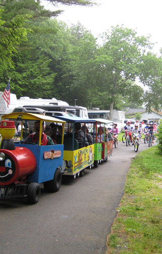
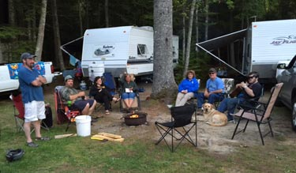

We are very proud of Shady Oaks Campground and thought you might enjoy a bit of its' history. In 1969 two couples formed a partnership and purchased a piece of land that developed into a 25 site campground designed for tents and pop-ups under the name of Kozy Kampers Campground.
The campground changed ownership 3 times. Joyce and Don Nelson appeared on the scene in 1989 and Shady Oaks was born. That change was a big challenge since neither of them had ever experienced the camping adventure. Soon it was evident that major changes had to be made to keep up with the fast-growing RV industry. A few items on the list were a home for the owners, a swimming pool, an updated power system, sewer hookups, and renovations to the bathhouse, laundry and recreation hall. Most days Don had a chainsaw in one hand and a shovel in the other. Joyce was close behind with a mop and broom.
They learned early on that they needed to create a family atmosphere. They encouraged seasonal campers to make Shady Oaks their summer home. Young and old alike brought life to the summer festivities and friendships grew. After 25 years Shady Oaks has grown to 70 sites and 5 cabins. At least half our campers are full time summer residents, providing that family atmosphere they sought.
In October of 2014 Don and Joyce purchased a home and have now retired to Island Life and the Greenlaw family moved in.
David and I (Marlene) have camped for many years. First tenting then to a travel trailer, then to a pop-up. David and I have always dreamed of owning our own campground and used to discuss it as we sat by our campfire at the many campgrounds we had visited through the years. Our first vacation with our 1 month old daughter Bethany was tenting Greenlaw style. Yes we had a tent, but along with that came cots, a crib, refrigerator, wooden rocking chair, microwave and many other comforts of home. I think that's when David decided that we needed a travel trailer. Of course we went all out and bought a 30 foot camper.
Our favorite part of camping is enjoying our family time around the camp fire and the great friends we met along the way. In the summer of 2014 our whole family became campers at Shady Oaks and fell in love with the Nelsons and all the other families at Shady Oaks Campground. We turned a one month stay into what we hope is a lifetime.
Come enjoy a relaxing stay with us at Shady Oaks and meet our family and our extended family (our campers). Make sure to come to one of our amazing pancake breakfasts or a pot luck supper or brunch. Sit a spell in one of the rockers on the front porch, listen to a story or two, or take a swim in the pool. Take a few days to enjoy the great places you can visit just minutes from our doorstep, Acadia National Park, Camden-Rockland, Bangor and many other destinations in our great state. But whatever you choose to do make sure you relax and enjoy your stay with us. We hope to make your stay with us very enjoyable and relaxing.
David & Marlene Greenlaw